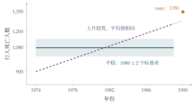

STEP I 1992，第 14 题
继续之前，请先阅读题目（原题为英文）。题目载于 STEP Support Programme 的题目资料库： step.maths.org/questions/92-s1-q14
引子
统计学（statistics）是从数据中学习的科学，而它的第一课就是：数字本身不会说话。“安全六倍”、“升幅惊人”、“死伤日益惨重”：新闻标题每天都把数字变成论断，而这些论断往往是错的；错不在数字本身有假，而在于比较的对象不对，或是把寻常的随机波动（random variation）误当成趋势。
这道题完全没有公式，在 STEP 中甚为罕见。它要求你像统计学家那样思考：要证明每个标题成立，我们需要知道甚么？单凭偶然，我们又应预期有多大的波动？答案要用到泊松分布（Poisson distribution）（第 12.18 节），而当中的推理正是本章其余部分的基础。
动笔之前
假如死亡事件以稳定的比率独立而随机地发生，每年的总数应有多大的变动？若平均每年为 \(1080\)，每年与平均值的典型偏差是多少？
独立罕见事件的计数近似服从泊松分布，而平均值为 \(\mu\) 的泊松计数，其方差（variance）为 \(\mu\)，标准差（standard deviation）为 \(\sqrt\mu\)。取 \(\mu = 1080\)，标准差约为 \(33\)：每年总数落在约 \(1015\) 至 \(1145\) 之间，都不足为奇。
逐步解题
阶段 1 “坐飞机比步行安全六倍”
每年有 \(1080\) 名行人死亡，\(180\) 人死于空难。六倍，究竟是甚么的六倍？
这个标题比较的是死亡总数，但安全与否关乎的是风险：每单位风险承担量（exposure）的死亡人数。几乎人人每天都步行，坐飞机的人却相对较少，而且只是偶一为之。公平的比较应采用每公里行程、每小时行程或每次行程的死亡人数，而这几种算法可以得出截然不同的答案（按每公里计，航空旅行极为安全；按每次行程计则没有那么出色，因为大多数空难死亡都发生在起飞和降落之时）。题目所给的数字根本不能“证明”两者孰更安全。此外，“在道路意外中丧生的行人”是个狭窄的类别；整体的道路死亡人数要大得多。
阶段 2 “我们的天空更安全：1990 年仅 125 人丧生”
空难死亡像独立的罕见事件吗？你预期每年总数的变动有多大？
空难死亡是成群出现的：一次坠机就可能夺去数百人的性命。因此每年的总数主要取决于坠机的次数，而这个次数很小，于是总数每年的变动极大。某一年有 \(125\) 人死亡，相对于平均的 \(180\) 人，与情况毫无改变完全吻合：只要多一次坠机，这个数字就会彻底改观。一年的数据不能显示趋势。
阶段 3 “道路死伤日益惨重：星期二 7 人丧生”
平均每天有多少名行人丧生？若每天的死亡人数服从泊松分布，一天之内出现 \(7\) 人或以上的情况有多常见？
平均每天有 \(\frac{1080}{365} \approx 2.96\) 名行人死亡。若每天的计数服从这个平均值的泊松分布，则 \(\mathrm{P}(\geq 7) \approx 0.031\)：纯粹出于偶然，每年就约有 \(11\) 天会有 \(7\) 名或以上的行人死亡。（而且“道路死伤”想必还包括司机和乘客，那么一天之内有 \(7\) 人死于道路意外就更不值得大惊小怪了。）单单一天的数字，对趋势毫无说明作用。这个标题从一个变动极大的数列中挑出一个极端值，是典型的谬误。
阶段 4 “升幅惊人：1990 年 1350 名行人丧生”
把 \(1350\) 与泊松标准差比较。这纯属偶然吗？若不是，还有甚么可以解释它？这又足以称为“升幅惊人”吗？
这是全题最有分量的部分。在稳定的泊松模型之下，\(1350\) 比平均值 \(1080\) 高出 \(270\)，约为 \(8\) 个标准差：这极不可能是偶然所致。所以很可能确实有些事情改变了。但这个标题仍然言过其实，原因有以下几方面：
被平均值掩盖的趋势。\(1080\) 这个数字是 \(16\) 年的平均值。假如死亡人数由 1974 年的约 \(900\) 稳步上升至 1989 年的约 \(1260\)，平均值仍然是 \(1080\)，而 1990 年的 \(1350\) 只不过是延续既有的趋势，并非突如其来的“惊人”升幅（图 13.1.1）。我们需要逐年的数字。
风险承担量。人口增长、步行的人增多、交通更繁忙或人口老化，都会令死亡人数上升，而道路按每次行程计却没有变得更危险。按人均计算，或按每公里步行路程计算的比率，才是恰当的量度。
定义。死亡个案的记录或分类方式一旦改变（例如意外发生后多久之内死亡才计算在内），就可以造成数字的跳升。
过度离散（over-dispersion）。现实中每年计数的变动比泊松模型所显示的要大，因为各种条件（天气、经济活动）都在变。对“\(8\) 个标准差”这个说法应有所保留。
升幅很可能是真实的，但它是否惊人、成因为何，则需要更多数据才能判断。

回顾
同类才可相比。风险需要有分母：每人、每公里或每次行程的死亡人数。
认识自然波动。泊松分布的变异性，以及成群出现的事件那大得多的变异性，让我们知道甚么时候的变化才值得留意。
平均值会掩盖趋势。单凭一个概括的数字，无法描述一个量如何随时间变化。
背后的数学
信号与杂讯
每一个统计问题，归根究底都是要把信号（signal，即真实的效应或趋势）与杂讯（noise，即随机波动）分开。泊松模型为独立事件计数中的杂讯提供了一把尺：标准差为 \(\sqrt\mu\)。罕见事件的相对波动很大：计数为 \(9\) 时，波动约为 \(\pm3\)，即其大小的三分之一；而计数为 \(10\,000\) 时，波动只有约 \(1\%\)。正因如此，小数目（某一天的死亡人数、某一年的坠机次数）才会屡屡被人过度解读，而小镇上的癌症“群组”最终也多半只是偶然。
均值回归
还有另一个陷阱。道路安全摄影机往往安装在刚刚经历了异常恶劣一年的地点。翌年，意外减少，功劳就归于摄影机。但异常恶劣的一年过后，本来就很可能迎来较为平常的一年：这就是均值回归（regression to the mean），最早由高尔顿（Francis Galton）在 1880 年代提出。要把摄影机的效果与均值回归分开，就必须与没有安装摄影机的类似地点作比较，这正是对照实验（controlled experiment）背后的理念。
南丁格尔（Florence Nightingale）以克里米亚战争中的护士身分闻名于世，同时也是统计学的先驱。她在 1858 年绘制的“玫瑰图”显示，死于可预防疾病的士兵远多于死于创伤的士兵，并说服了政府改革军队的卫生状况。她坚持使用比率（每年每千名士兵的死亡人数）而非原始总数，并坚持同类才可相比，这些正是本题所考核的要点。她是首位获选为皇家统计学会（Royal Statistical Society）会士的女性。
思维技巧
在接受一个统计论断之前，先问清楚：比较的对象是甚么，分母是甚么，以及单凭偶然会预期有多大的波动。
到了大学，统计学课程会把这些问题化为精确的方法：假设检验（hypothesis test）探究一项观察结果是否与偶然相符；置信区间（confidence interval）说明一个量测量得有多精确；而实验设计（design of experiments）则确保比较公平。
延伸练习
泊松分布的尾部。设 \(X\) 服从平均值为 \(2.96\) 的泊松分布，验证 \(\mathrm{P}(X \geq 7) \approx 0.031\)。你预期每年有多少天会有 \(9\) 名或以上的行人死亡？
成群出现的死亡。假设坠机事故按泊松过程（Poisson process）发生，比率为每年 \(1.2\) 宗，而每宗夺去 \(150\) 人的性命。求每年空难死亡人数的平均值和标准差。一年之内有 \(125\) 人或以下死亡，是否不寻常？有没有可能某一年恰好有 \(125\) 人死亡？
显著的升幅？假如 1974–1989 年的数字一直平稳地维持在 \(1080 \pm 33\)，试（利用正态近似（normal approximation））求单一年份出现 \(1350\) 或以上的概率。
拟一个更好的标题。为四个标题逐一改写，各拟一个数据真正支持的标题。
延伸阅读
David Spiegelhalter, The Art of Statistics（Pelican）。讲述如何从数据中学习，并附有大量取自新闻的例子。
Tim Harford, How to Make the World Add Up（Bridge Street）。思考传媒中的数字的十条法则。
Darrell Huff, How to Lie with Statistics（Penguin）。1954 年出版的短篇经典，至今仍不过时。